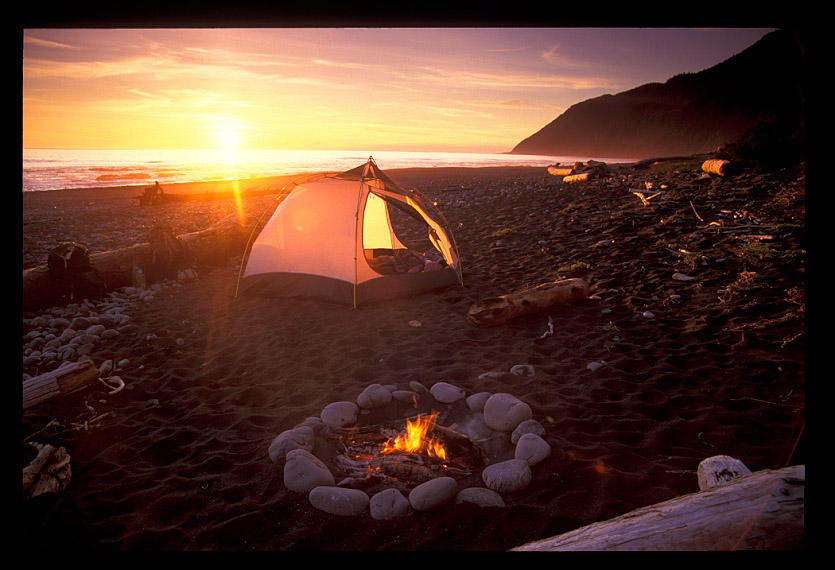

Firewood for Camping

Many people don’t know that there are rules about how to get firewood for camping and campfires when you are in a national or state park. Most parks don’t allow campers to gather firewood directly from park lands—even if it’s dead wood that is right beside your campsite. You should check the rules in the national or state park where you are camping before you decide to pick up and burn anything. If not, your economical camping trip may turn into a burden if you end up having to pay fines.
Something else you should know is there may be laws about bringing your own firewood into a national or state park. Many parks ban outside wood being brought into the parks because people can unknowingly bring pests and disease into the parks on their firewood. It would be very frustrating to load up firewood only to learn that it’s not permitted in the park campgrounds. Many national and state parks that don’t allow you to gather firewood on their lands and don’t allow you to bring your own firewood will make safe firewood available for campers for a small fee. Something else you should know is that in most places you’ll not be allowed to leave any firewood behind you when you leave your campsite. You will either have to burn all of your wood or give it to another camper.
If you have approval to gather firewood in a national or state park, it’s a good idea to try to find firewood that is near your campsite. Hauling firewood a great distance can wear you out fast. It’s also a good idea to wear gloves when gathering firewood—whether you’re in a national or state park, or not. You never know what may be hiding or sleeping under a log you pickup.
When choosing firewood, you need to know the difference between hard wood and soft wood. Hard wood will burn longer than soft wood. If you just need a quick fire in the summer to cook, opting for a soft wood is a good idea. You can cook your food and the fire won’t be around long enough to be too bothersome. If you want a continual campfire for winter camping, opt for hardwood. Hardwoods include the oaks, beech, maple and ash trees. Softwoods include cedar, cypress, pine, and spruce trees. If you’d like firewood that has a nice aroma, lean toward oak and cedar firewood.
If possible, have someone stand guard for you while you are doing your business. They can send out a warning to you if a hiker or camper is coming your way. While it’s true that some things just can’t be rushed, it can give you an extra few minutes to get into an area that is not as open—like behind a tree or large rock.
With a little research you can learn how to get firewood for camping. Whether you get the wood directly from the area you are camping in, bring your own, or purchase it from someone at your campground, follow all the safety rules when it comes to burning wood. Don’t ever go off from your campsite with a fire burning, or leave hot coals behind you when you go home. Following these safety practices can reduce the number of fires that burn up acres and acres of land each year.